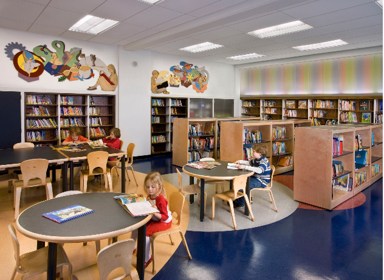
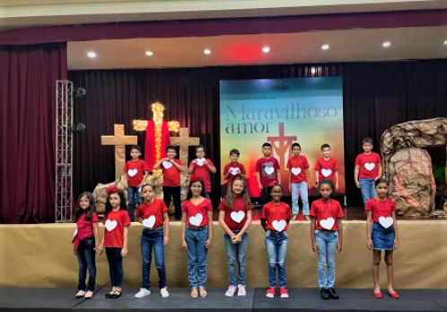
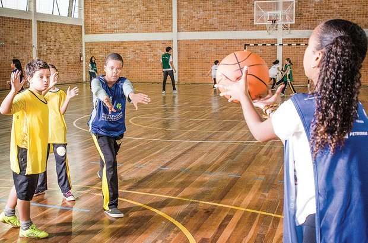
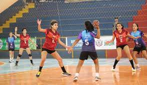

A piscina da escola, é usado para praticar natação na escola, lá acontece campeonatos, e as veses os alunos (tanto os que não praticam o esporte quanto os que praticam) podem banhar nela por diversão, como no dia das crianças, um prêmio, etc.

Biblioteca da escola
A biblioteca da escola foi reformada em 2022. Lá tem várias sessões, como infantis, estrangeiros, etc

Auditório da escola
O auditório da escola é usado para ensaio de apresentações e apresentações, também para o ensino da materia da oficina de teatro(do 6º ano até o 9º ano).
Conquistas da escola
Vice-campeão do Metropolitano Escolar – Série Ouro/Sub-15

Ganhou no sub-17 do campeonato de futsal feminino
Escreva sobre essa conquista
3° lugar dos Jogos Escolares de Minas Gerais – Sub-14

Ficou em 3° no sub-14 do campeonato de handebol feminino
Escreva sobre essa conquista
Vice-campeão dos Jogos Escolares de Belo Horizonte – Sub-17
Ganhou no sub-14 do campeonato de basquete masculino